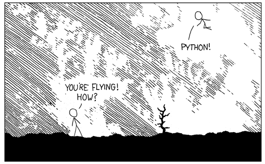

Nếu bạn đang bắt đầu với Python, những mẹo sau sẽ giúp bạn tiếp cận nhanh hơn với ngôn ngữ lập trình thú vị này.

Chạy python script:
Đối với hầu hết các hệ thống UNIX, bạn có thể trực tiếp chạy script python bằng cách sau:
$ python MyFirstPythonScript.py
Bạn cũng có thể chạy script bằng cách tương tự trên terminal của Windows sau khi đã cài đặt Python.
Đầu tiên, mở Command Prompt của Windows bằng cách gõ cmd trên Start bar
Sau đó bạn chỉ cần gõ python để gọi Python shell hoặc cd tới đường dẫn script trên máy bạn và chạy.
python yourscript.py

Swap giá trị 2 biến
>>> x, y = 10, 20
>>> x, y = y, x
>>> x, y
(20, 10)
Phép gán bên trái sẽ tạo một tuple mới. Trong khi phép gán bên phải ngay lập tức giải nén (unpack) tuple và gán giá trị vào tuple được tạo bên trái.
Kiểm tra một list có rỗng không
>>> a = []
>>> if not a:
print("a is empty")
a is empty
Note:
Đối với các dữ liệu kiểu chuỗi, list, tuple (gọi chung là sequence), nếu sequence rỗng thì giá trị của nó là false.
Nên dùng:
if not seq:
if seq:
Không nên dùng:
if len(seq):
if not len(seq):
Xem thêm: PEP8
Sử dụng hàm enumerate()
Hàm enumerate() thêm một biến đếm khi chạy vòng lặp.
subjects = ('Python', 'Coding', 'Tips')
for i, subject in enumerate(subjects):
print(str(i) + "-" str(subject))
Kết quả:
0-Python
1-Coding
2-Tips
Tham khảo: PEP279
Liệt kê danh sách các files trong folder dùng os.walk()
Syntax:
os.walk(top[, topdown=True[, onerror=None[, followlinks=False]]])
Example:
import os
for root, dirs, files in os.walk(".", topdown=False):
for name in files:
print(os.path.join(root, name))
for name in dirs:
print(os.path.join(root, name))
Example result:
.\blockchain\tim_hieu_ve_blockchain.md
.\python\checkpython2or3.md
.\python\getuserinput.md
.\python\installpackageinscript.md
.\python\onelinewebserver.md
.\python\openwebpage.md
.\python\python2or3.md
.\python\pythonbeginertips.md
.\python\pythonErrorHandling.md
.\blockchain
.\python
Kết hợp nhiều phép so sánh một lúc
>>> n = 10
>>> 1<n<20
True
>>> 10<n<10
False
>>> 9<n==10
True
To be continue ...
Header cover image: Batteries included